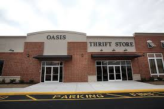
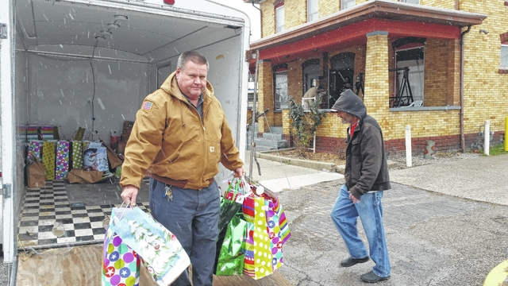

Every little bit helps when donating or volunteering at a homeless shelter. Oasis is a private, non profit charitable organization. Their mission is to provide services to the homeless and less fortunate in Portsmouth, west Chesapeake, and northern Suffolk. The Oasis Social Ministry office is open Monday through Friday from 8:00 to 3:00.
 View Oasis Social ministries site herePortsmouth Volunteers for the homeless is another non-profit corporation working with over 49 houses of faith around the area. They provide shelter for the homeless from mid November through the first week of May each year with emergency winter night shelter from November to may.
 View the homeless shelter directory here